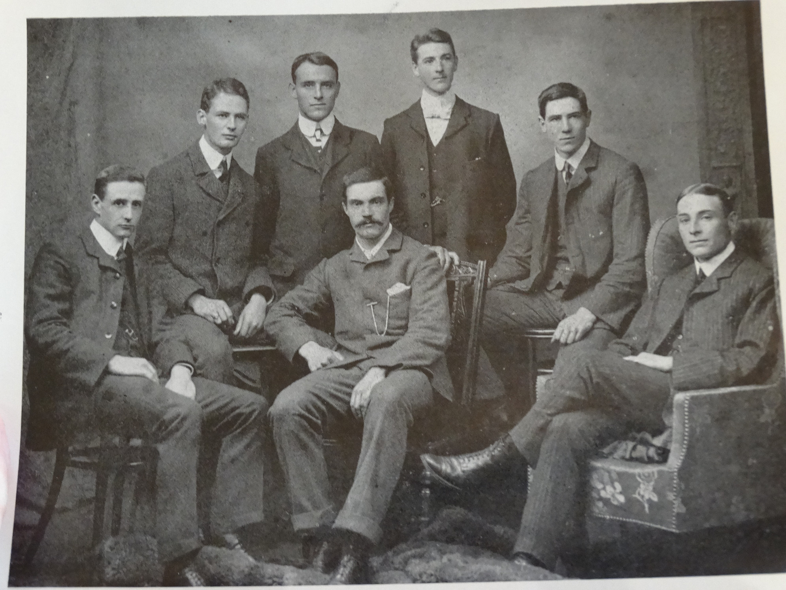
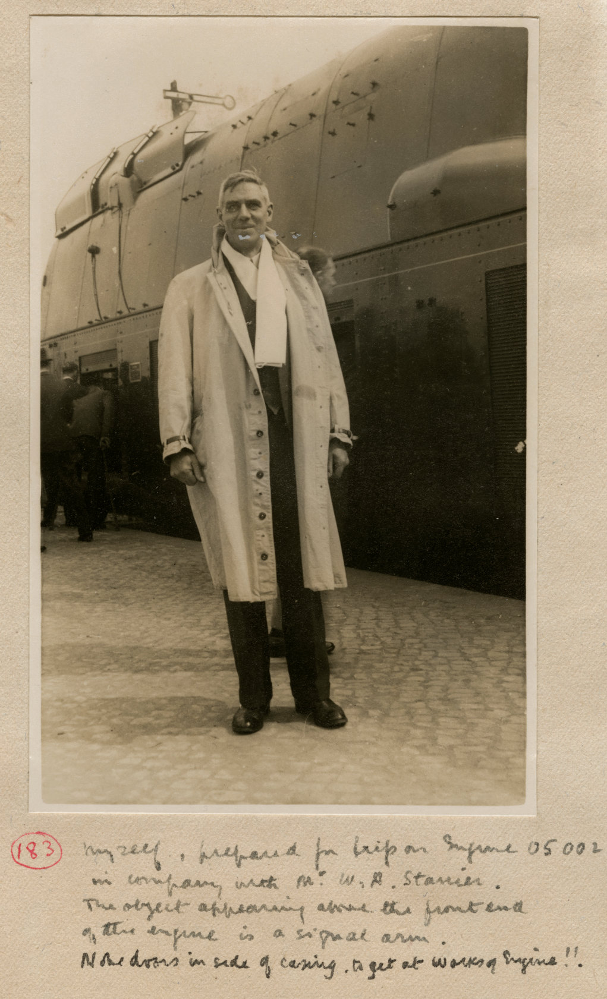

Updated: 12/27/2024 US Format
Sir Nigel Gresley is most often believed to be the inventor of conjugated valve gear. The truth is conjugated motion for use on locomotives was reinvented by Harold Holcroft. The first conjugated gear ever to exist was invented by David Joy for three cylinder maritime engines, but Holcroft created his without any prior knowledge of Joy's. Gresley understood the potential of conjugated motion. Gresley did invent the 2 to 1 lever set and worked with Harold Holcroft to incorporate it into his most famous loco designs. Holcroft also wrote an autobiography titled Locomotive Adventure with two volumes. I've read the first volume and highly recommend it for anyone who is interested in locomotive engineering history.
Harold's papers were donated by one of his grandchildren to the British National Railway Museum and can be found here.
|
GWR Drafting office staff 1903. Holcroft is second from the right. |
Holcroft standing in front of one of the Dampflokomotiven der Baureihe 05 shortly before the war. |
|---|---|
|  |  |
Photo Provided by John A. Jeff